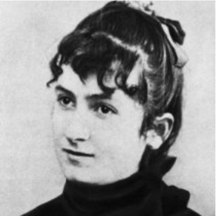

Centro de Educación
Maria Montessori de Madrid

|
¿Quienes somos? |

|
Inicio
¿Quienes somos?
Nuestra Enseñanza
Matrícula
Contacto
|
Nuestra Inspiración.
¿Quien es Maria Montessori? Estudió ingeniería a los 14 años, luego biología y por último es aceptada en la Universidad de Roma, en la Escuela de Medicina. A pesar de que su padre se opuso al principio, se graduó en 1896 como la primera mujer médico en Italia. Fue miembro de la Clínica Psiquiátrica Universitaria de Roma. Más tarde, estudió Antropología y obtuvo un doctorado en Filosofía, época en la que asiste a uno de los primeros cursos de psicología experimental. Fue contemporánea de Freud y desarrolló su propia clasificación de enfermedades mentales. |
 |
| INICIO | E-MAIL: ies_montessori_madrid@gmail.com | TLF: 657734328 / 957463521 |
|